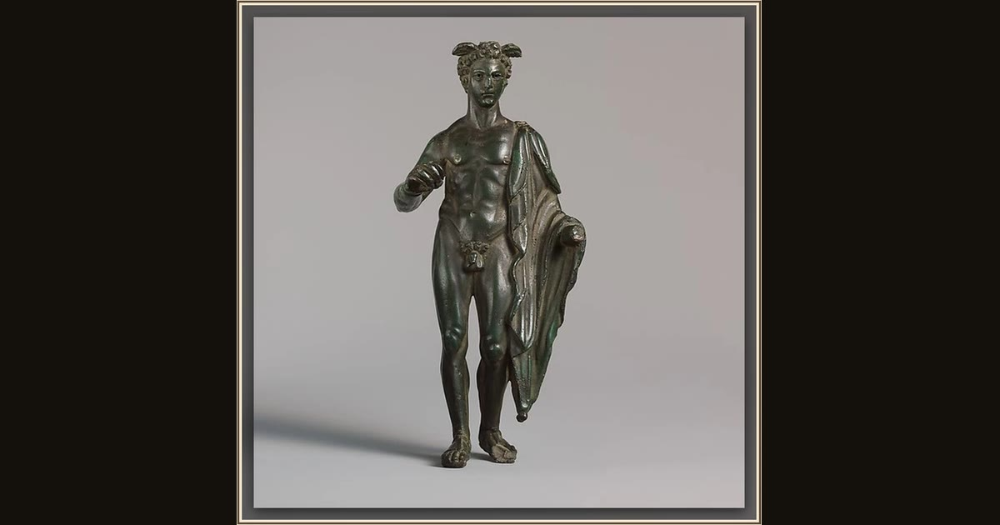

Bronze statuette of Mercury
Unknown · 1st century CE · The Metropolitan Museum of Art · New York, USA
The winged cap and the herald’s staff this little bronze god once held mark him as Hermes (the Romans’ Mercury), the messenger of the gods. In Book 5 he laces on his golden sandals and skims down over the waves to Calypso’s island with Zeus’s order: let Odysse